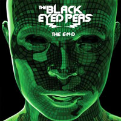

amfm's 20 ALBUMS OF 2009 (11 thru 15)
By: Ciera Mckissick
15. Kid Cudi, Man on the Moon
Kid Cudi is the latest indie hip hopper to hit the scene. He first piqued the interest of fans with his mixtape A Kid Named Cudi released in 2008 to critical acclaim, and his ability to mix hip hop with jazz, rock and soul. He's worked alongside some of the godfather's of genre infused music for Man on the Moon, Common and Kanye West, which he collaborated with to make the song, "Make Her Say." The song samples the acoustic version of Lady Gaga's "Pokerface" and Common alludes to Jamie Foxx's "Blame it on the Alcohol." The video is like an indie flick, with a good soundtrack. He also collaborates with MGMT and Ratatat on the track "Pursuit of Happiness (Nightmare), which is also produced by Ratatat, who makes another appearance in the song, "Alive (Nightmare)." The album is set up in a series of five Acts, and is emotionally charged with raw lyrics and vocals. The top single from the album, "Day N' Night" skyrocketed to the top of the Billboard charts, making the album out of this world.
[MAKE HER SAY]
14. Pearl Jam, Back Spacer
Fans saw a different Pearl Jam this year, as the band strayed away from their signature sound for their ninth studio album BackSpacer. Having worked on tons of new material in 2008, including some instrumentals and demo tracks, the band decided to incorporate that into their new album, which has a new wave/pop sound. The songs are short and sweet, none of them over five minutes, unlike some of their past work where the songs were almost like a jam fest. Stand out tracks include "The Fixer," and "Amongst the Waves." The album fills out nicely with a mixture of up-tempo songs and ballads. Most of this shift in their sound comes from lead singer Eddie Vedder's Into the Wild Soundtrack still running through his veins. Vedder also says the election of President Obama also had an influence on the optimistic tone of the album. The significant change was embraced widely by fans, and is one of the band's best later records. Although the band is a veteran in the rock game, they are able to evolve creatively with the times and still produce music that people love and want to hear.
[THE FIXER]
13. Black Eyed Peas, The E.N.D
The Black Eyed Peas are back from Fergi's solo stint, and Will.i.am's hardcore musical Obama campaign. Their album, The E.N.D marked the beginning of musical sounds from the future. The Black Eyed Peas are so 3008 and everyone else is so 2000 and late, Will.i.am even lost the so passé dreads for a shorter do. "Boom Boom Pow" was definitely an anthem this year, and "I've Got a Feeling" was the song everybody played before a big night out. BEP has stayed true to their musical roots--making music that showcases each member of the group's individual talent, and music with a conscience. Their song "One Tribe" has got to stem from the historical change our country went through with the election of President Obama. "One Tribe, one time, one planet, one race/It’s all one blood, don't care about your face/The color of your eye or the tone of your skin...Cause man I'm loving this peace" and we are loving this album!
[ONE TRIBE]
12. Beirut, March of the Zapotec and RealPeople Holland EP
Zach Condon, the lead singer of Beirut, brought his travels back with him to the studio. The March of the Zapotec and RealPeople Holland EP is a two disc set, one containing the remnants of Condon's trip to Oaxaca, Mexico with a 19-piece band from Mexico backing Condon on Zapotec. The Jimenez Band from the town of Teotitlán del Valle in Oaxaca really added a certain authenticity to the music. It feels like you're an indie kid in Mexico, and you can experience the trip through the tracks."La Llorona," one of the tracks, is based on a popular legend told in most Spanish-speaking countries. Stand out tracks from the Zapotec half includes, "The Shrew," and "My Wife." The other half of the EP, Holland, is more electronic and more removed from the Mexican theme of the first disc. "My Night with a Prostitute in Marseilles," is one of best songs on Holland.
[LA LLORONA] [MY NIGHT W/A PROSTITUTE IN MARSEILLES]
11. Muse, The Resistance
English band, Muse, began their invasion of the United States this year, despite having already established themselves quite awhile back. The Resistance is the band's fifth album. They performed on MTV for the Video Music Awards, and apparently it was their first time performing in the States. The album was even more successful than their previous album, Black Holes and Revelations. The album soared to the top in 19 countries and reached the third spot on the Billboard charts. The album is classically driven, there is even a three-part, thirteen minute song, "Exogenesis: Symphony" which is very much like a symphony or concerto in the sound and the fact that over 40 musicians were involved in the recording process. The album is on a grandeur scale than any of their past albums, and perhaps it is become of their newfound success. "Uprising," their first single from the album definitely reflects that.
[UPRISING]
1| 2 | 3 | 4 | LISTENING PAGE